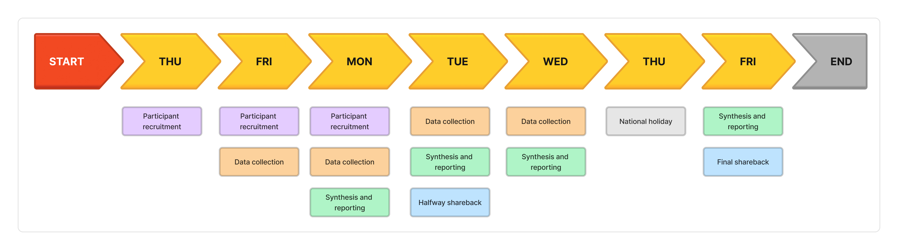
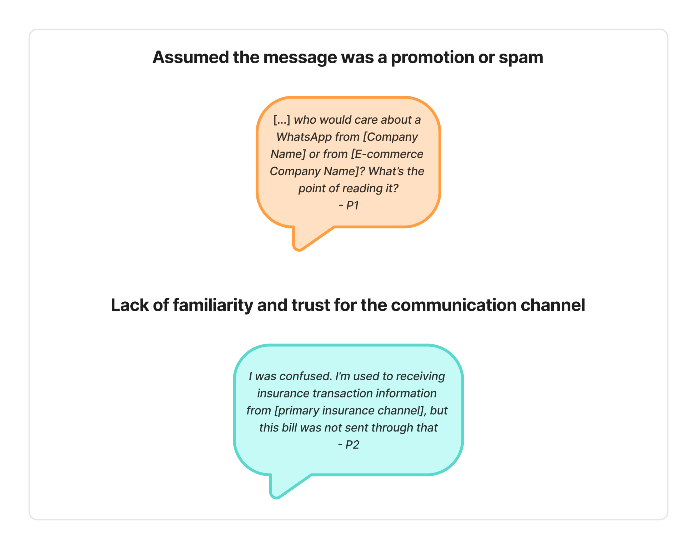
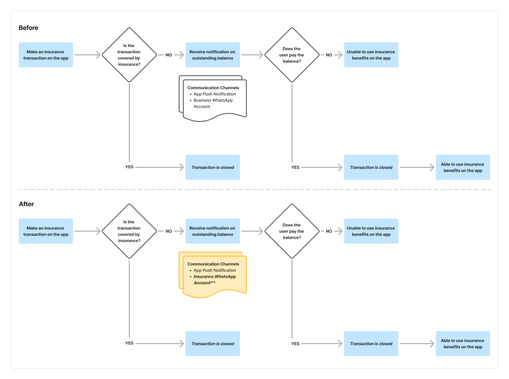

Rethinking repayment communication
@ Health Insurance Company
Health tech · Sole UX researcher · 2023 · 7 business days
To reduce costs from uncovered insurance transactions, a feature was introduced allowing users to repay outstanding balances through the app. However, repayment rates remained low, so I led qualitative interviews with both paying and non-paying users to uncover the reasons behind this.
- Approach
- Qualitative interviews.
- Outcome
- The research revealed two key issues: users mistrusted WhatsApp messages, often dismissing them as spam, and a system bug allowed some to continue transacting without repayment. By recommending a shift to a trusted communication channel and resolving the bug, repayment and user engagement rates improved. This project highlights the importance of clear communication and empathetic research when addressing sensitive user experiences.
- My role
- I led the research design, moderated all user interviews, and synthesized and presented findings. I collaborated closely with product and engineering teams to ensure recommendations aligned with roadmap priorities.
Disclaimers: Certain details have been omitted or generalized to protect confidential company information. Content is optimized for desktop viewing.
Background
Operational costs were being incurred due to uncovered insurance transactions made through the app. To address this, a feature was introduced that allowed users to settle outstanding balances directly within the platform.

Despite the implementation of this feature, repayment rates remained lower than anticipated. To better understand the underlying causes, I led a research project focused on uncovering user perceptions, behaviors, and potential friction points within the bill settlement experience.
The goal was to identify experience gaps that could explain the difference between users who successfully settled their balances and those who did not — and ultimately, to improve the overall service experience.
Research questions
- How do users perceive the bill settlement process both within and outside the app?
- Are there specific stages in the journey that lead to confusion or drop-off?
- Why do users choose to settle or postpone payment of their outstanding balance?
Methods
To address the research questions, I conducted 30-minute moderated, semi-structured interviews with 4 end users.
Participants were divided evenly into two groups:
- Those who had successfully settled their outstanding balance
- Those who had not completed the repayment process
Participants met the following criterion:
- Had received a notification regarding an outstanding balance
I used thematic analysis to synthesize the interview findings.


Results and Recommendations
I presented the findings and recommendations in a slide deck to the product manager, product designer, UX writer, and UX writer manager, using interview recordings alongside quotes. We discussed and prioritized the recommendations, and the resulting action steps were communicated to engineering for implementation.
In the weeks that followed, the product manager tracked repayment rates and repayment notification open rates. The metrics were assessed separately and reported together.
1. Users perceived the outstanding balance notification as spam due to unfamiliar communication channels
Messages about unpaid balances were sent through the company’s WhatsApp Business account, which users did not associate with official insurance communications. Thus, users ignored the messages, mistaking them for spam or promotional content.


I recommended sending outstanding balance notifications through the primary WhatsApp account that users already associated with insurance services. This account had an established sense of trust and familiarity, making it a more effective and credible communication channel.
Impact: This change led to measurable improvements not only in repayment rates, but also in user engagement with repayment notifications, as indicated by open rates — suggesting increased trust in and responsiveness to critical communications.


2. A bug allowed users with outstanding balances to continue transacting — contrary to intended app behavior
During one of the interviews, a participant who had not repaid their outstanding balance mentioned continuing to use the app’s transactional features. This behavior contradicted the expected user flow, where access should have been restricted until the balance was cleared.
I flagged this issue and communicated it to the engineering team for review. Upon investigation, a bug was confirmed and subsequently resolved.
Impact: Fixing the bug led to a measurable increase in repayment rates. More importantly, it helped restore compliance with the intended policy and reinforced operational integrity.
Reflections
- Handling sensitive topics in user interviews requires care and empathy. Given the potentially uncomfortable nature of discussing unpaid balances, extra attention must be paid to the interview script, the interviewer’s tone, and responses during the session. It’s crucial to foster a non-judgmental environment where participants feel safe sharing their experiences. As the interviewer, I was mindful not to imply that participants had made a mistake or acted irresponsibly. This helped reduce bias and ensured the authenticity of user responses.
- Communication channels must align with user trust and message importance. Channel selection for user communication should go beyond ease of implementation. For messages involving payments, service access, or policy enforcement, it’s vital to use channels that are already trusted by users and that convey the importance of the message. Doing so not only increases engagement but also reduces confusion and ensures that critical messages are actually seen and understood.